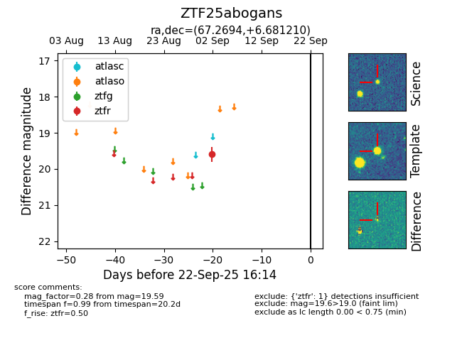

FINK: ZTF25abogans
Lasair: ZTF25abogans
ALeRCE: ZTF25abogans
ZTF25abogans (ztf,fink)
equatorial (ra, dec) = (67.2694,+6.68121)
galactic (l, b) = (188.4885,-27.47668)

last ztfr=19.59
1 ztfr detections